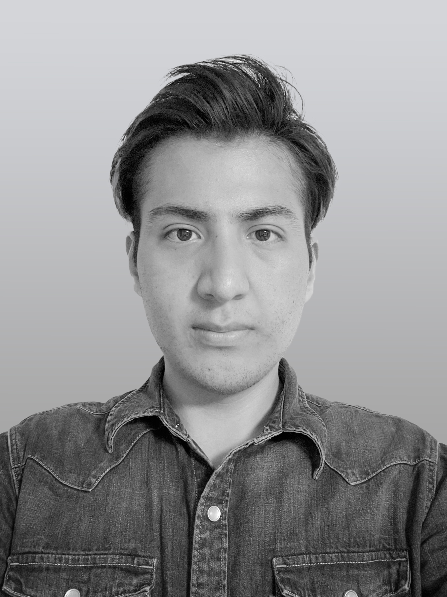

About me
My profileI'm an industrial designer with a passion for learning and an accepting creative challenge. With two years of experience in the field, I've developed a strong foundation in design principles and techniques. I studied Industrial Design, which provided me with a solid understanding of the creative process from concept development to final execution. Constantly seeking ways to enhance my abilities, in interface online website and applications. My abilities have allowed me to explore various domains, including graphic design, service design, product development, fashion consulting and UI. By continually expanding my knowledge and refining my skills in these areas, I aim to create impactful and
自己紹介
ノリエガヂエごと申します。現在、目白ファッション&アートカレッジの2年生で、日本語でファッションとビジネスを専攻しています。3年前にメキシコから渡り、日本の世界で学び、成長してきました。英語、スペイン語、日本語、韓国語。デザイン、営業、販売、製品開発、グラフィックデザイン、フロントエンドを勉強していました。そして異なる文化における対人スキルが私の特技です。独自の視点を持っています。 学業の力 私は、モンテレイ工科大学に卒業していました。カナダで一学期にデザイン可能性の研究し、その時代背景を知って世界が製造のプロセスをどのように変え、より効率的に、より生態学的に持続可能になる方法について学びました。 学業以外の力 幼年時代、普通な生活ではりませんでした。6年から自分の国で様々な学校や文化に引っ越しまた。それ以来、他の国で生活がどうなるが疑問に思っていました。どんな状況でも他の人を助け、文化や知識で別の人生に影響を薄える与える方法を学ぶ必要があります。